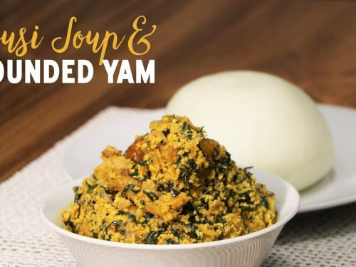

Pounded-yam and Egusi Soup

Description
Pounded yam: White, solid, fluffy.
Egusi: Thick, yellow.
Ingredients
- Tubers of Yam.
- White seed melon.
- Seasonings e.g Curry, Thyme, Maggi etc.
- Crayfish, Dry fish or meat
- Red oil
Steps in making Pounded Yam
- Peel and wash the yam with water.
- Add moderate amount of water to pot and add the yam to it.
- Allow to boil for 45-50 minutes until the yam is tender.
- Pour the cooked yam into a mortal and start pounding with pestel until it becomes fluffy.
- Then knead and serve with any soup of your liking.
Steps in making Egusi soup
- Peel, wash and grind the white seed melon.
- Mix with water to form a melon paste.
- Add oil to pot and let it heat up for a while.
- Add the melon paste and leave it for about 30 seconds
- Add the seasonings and necessary ingredients of your likings
- And cook for about 7 minutes